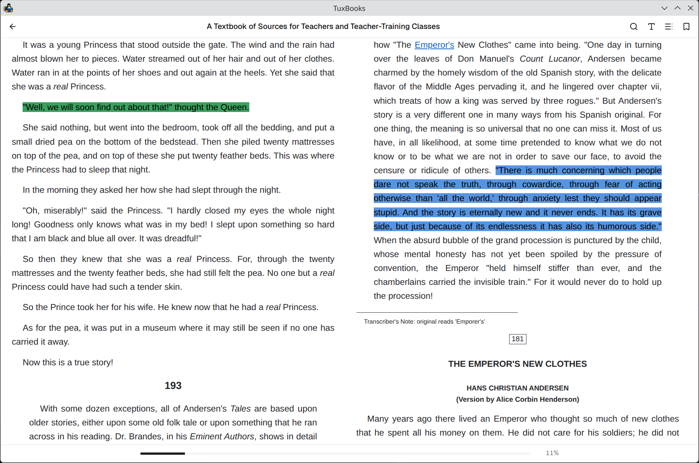

A real bookshelf
Point TuxBooks at a folder of EPUB and PDF files and every book shows up with its cover and details. Group books into collections, and keep an eye on what you are reading and what you have finished.
v0.0.18 · in active development
TuxBooks is a local-first, bookshelf-style ebook library and reader for Linux. Point it at a folder of EPUB and PDF files — it indexes your library, remembers where you stopped reading, and keeps everything on your machine.
Download for Linux Build from source
Free software under GPL‑3.0 · Local-first
TuxBooks is local-first: your library and reading data live on your machine.
Point TuxBooks at a folder of EPUB and PDF files and every book shows up with its cover and details. Group books into collections, and keep an eye on what you are reading and what you have finished.
Choose your font, text size, and line spacing for EPUB, and read PDFs with crisp zoom, fast scrolling, and a dark mode that keeps photographs in color.
The PDF engine is new. Wheel and pinch zoom keep the point under your cursor in place, deep zoom stays sharp, and the page stays visible while the next render loads.
Every book remembers your place. Close the app mid-chapter, come back tomorrow, and you are on the same page — in EPUB and PDF alike.
Search your whole library from anywhere with one keystroke, or search inside the book you are reading and jump straight to the match.
Mark a passage in any book: bookmark the page, highlight a line in color, attach a note. All of it is waiting in the sidebar next time you open the book.
Early development screenshots of TuxBooks in action.



TuxBooks shipped its first public release (0.0.1) in September 2026 and is in active pre-1.0 development. Release 0.0.14 fixed what surfaced in use, 0.0.15 aligned PDF zoom with GNOME Papers, and 0.0.18 adds a Data settings tab and startup recovery. The focus now is not on adding lots of new features, but on making the existing experience reliable, polished, and pleasant to use. The full roadmap lives in ROADMAP.md.
Squash the remaining bugs and finish the smaller pieces needed for a solid next release, in four areas:
Once the core experience is solid, development can move toward larger features and quality-of-life improvements — directions being explored, not commitments:
The roadmap is intentionally flexible — quality and a great reading experience take priority over feature count.